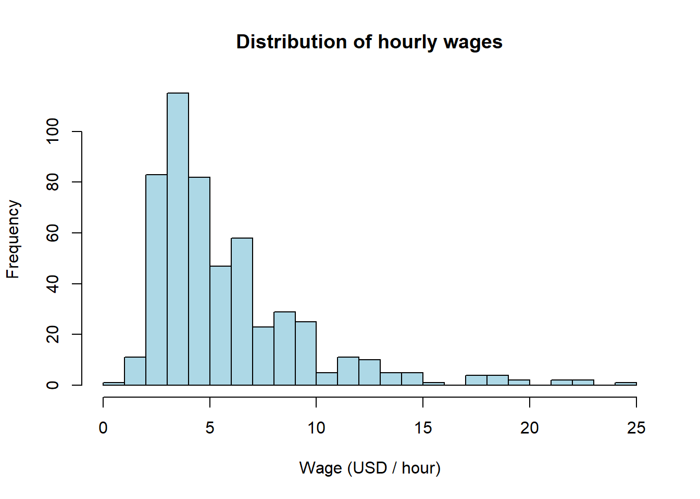
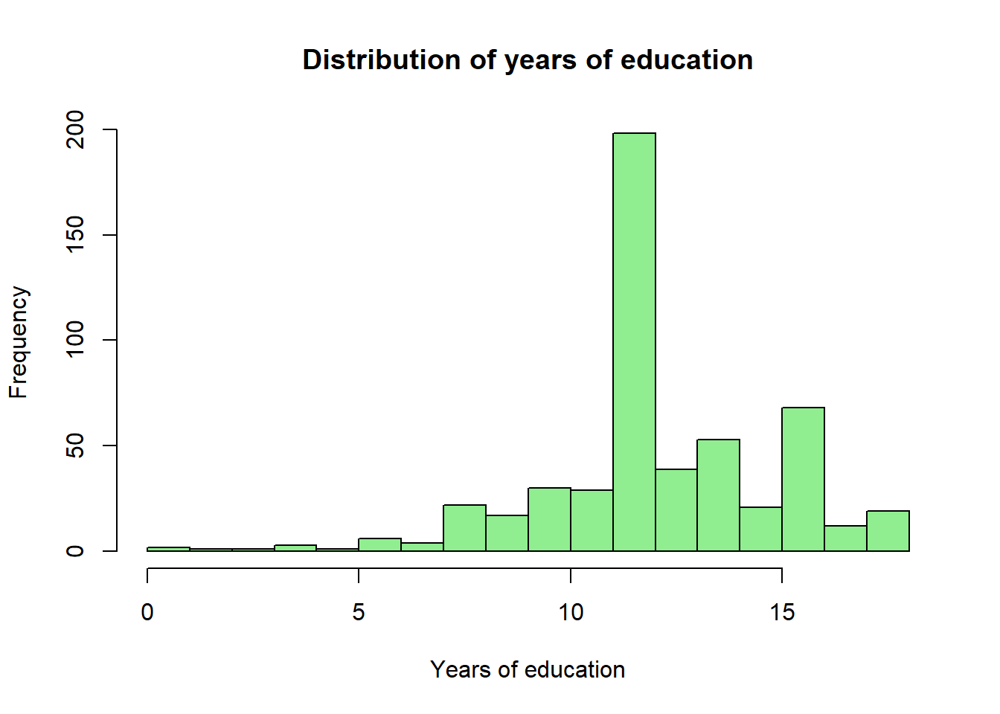
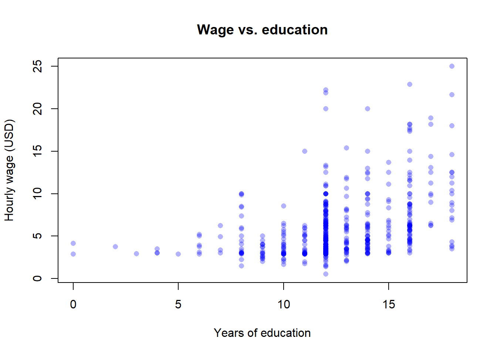

Code
library(wooldridge)
data("wage1")By the end of this chapter the reader should be able to:
str(), summary(), head(), hist(), plot(), tapply(), cor()) to explore a microeconomic dataset and compute conditional means.Does going to university cause higher wages, or do the people who would have earned more anyway tend to go to university?
This single question drives the rest of the course. A correlation between schooling and wages is easy to compute; turning that correlation into a credible statement about the causal return to education is hard. The tools we develop — the linear model, the assumptions on the error term, randomisation, controls, and tests — are all in the service of answering questions of this form.
is the application of statistical methods to economic data, with the goal of giving empirical content to economic relationships (Wooldridge 2020; Hill et al. 2017). Its main objective is the estimation of relationships between variables. Typical pairs of interest in this course include:
In general we write \(X \Rightarrow Y\), where \(X\) is the independent variable (or regressor, explanatory variable) and \(Y\) is the dependent variable (or response, outcome). Two questions then arise:
These “how much” questions are everywhere. A city council wonders how much violent crime will fall if it spends an additional million euros on policing. A local business must estimate the relationship between advertising spending and sales. A university must estimate how much enrolment will drop if it raises tuition by 300 euros. None of these questions can be answered by economic theory alone — they require data, a statistical model, and the discipline of econometrics.
An econometric model has two components:
The factors associated with an individual’s salary include age, gender, experience, and education. In general functional form:
\[ \text{Salary} = f(\text{Age},\,\text{Gender},\,\text{Experience},\,\text{Education}) + u. \]
A linear specification is
\[ \text{Salary} = \beta_0 + \beta_1\,\text{Age} + \beta_2\,\text{Gender} + \beta_3\,\text{Experience} + \beta_4\,\text{Education} + u. \]
The coefficients \(\beta_0, \beta_1, \dots, \beta_4\) are unknown population parameters that we will estimate from data using an econometric technique (typically Ordinary Least Squares, introduced in Chapter 2).
The functional form is itself a hypothesis about how the variables are connected. A key challenge in any applied problem is choosing a functional form that is compatible both with economic theory and with what the data look like.
The error \(u\) is a population object: it represents every determinant of \(Y\) that is not in the model, and it is unobservable. The residual \(\hat u_i = y_i - \hat y_i\) is its sample counterpart, obtained after estimating the model. Following Wooldridge’s notation, we keep \(u\) and \(\hat u\) strictly separate throughout the book.
We use econometric models for three broad purposes:
The third use — credible causal inference from observational data — is at the heart of the so-called Credibility Revolution in empirical economics. Hypothesis testing and prediction are sometimes called “Led Zeppelin” econometrics; causal inference is the modern emphasis (Hill et al. 2017).
One of the most important lessons of the course — repeated, if necessary, on every page — is that correlation does not imply causation. The fact that two variables move together does not establish that one of them causes the other. Two reasons stand out: selection bias and omitted variables.
A hospital wants to know whether ventilators save lives. A naive comparison shows that patients on ventilators die more often than patients not on ventilators. Should we conclude that ventilators kill patients?
Obviously not. The problem is selection bias: the sickest patients are precisely the ones who are placed on a ventilator. These patients would have had a higher mortality rate regardless of whether they received a ventilator.
The observed correlation between ventilator use and death is positive; the true causal effect of ventilators on survival is negative. A naive comparison can therefore give us not just the wrong magnitude but the wrong sign of the effect.
The lesson is general: whenever treatment is not assigned randomly, simple comparisons of outcomes between treated and untreated units confound the causal effect of the treatment with the characteristics of the units that selected into it.
Data show a strong positive correlation between ice-cream sales and drowning deaths. Should we ban ice cream to prevent drowning?
Of course not. The omitted variable is temperature. Hot weather causes both more ice-cream sales and more swimming (hence more drowning). Without controlling for temperature, the correlation between ice cream and drowning is a spurious correlation — a real statistical association with no causal content.
Whenever a variable that influences \(Y\) is also correlated with \(X\) but is left out of the model, the estimate of the effect of \(X\) will be biased. We will study this formally as omitted variable bias in Chapter 3.
If we randomly assign individuals to a treatment group and a control group, then on average the two groups will have the same observable and unobservable characteristics before the treatment is administered. Any difference in outcomes after the treatment can therefore be attributed to the treatment itself.
In the ventilator example, if we could randomly assign ventilators (not based on severity of illness), then the treatment and control groups would have the same average severity. The difference in mortality between the two groups would be an unbiased estimate of the causal effect of ventilators.
A useful identity to keep in mind is
\[ \underbrace{\text{difference in outcomes}}_{\text{what we observe}} = \underbrace{\text{causal effect}}_{\text{what we want}} + \underbrace{\text{selection bias}}_{\text{nuisance}}. \]
Randomisation forces the second term on the right to zero on average. That is why Randomised Controlled Trials (RCTs) are considered the gold standard for establishing causality.
A study finds that students at private schools score higher on standardised tests. Can we conclude that private schools cause better performance? No — students at private schools tend to come from wealthier families with more resources at home, more educated parents, and so on. The “treatment” (attending a private school) is not randomly assigned, so the comparison is contaminated by selection.
A randomised experiment assigns participants to two or more groups by lot: one group receives the intervention (the treatment); another serves as the control and receives a placebo or standard treatment. Randomisation ensures the groups are comparable, eliminates selection bias on average, and permits causal inference.
Genuine randomised experiments are common in clinical medicine but rare in economics and business, for two reasons:
In a quasi-experiment, assignment to treatment is not random but is based on some observable criterion — often a threshold, an eligibility rule, or a policy change that hits some units but not others.
During the COVID-19 pandemic, lockdown (the treatment) was assigned by the Junta de Andalucía only to municipalities with infection rates above 1{,}000 per 100{,}000 inhabitants. Municipalities just above and just below the threshold are arguably similar, so comparing their outcomes can approximate a random experiment. We return to this kind of design later in the book.
With nonexperimental data, all variables are collected simultaneously and the values are neither fixed nor repeatable by the researcher. Survey data are the classic example — the U.S. Current Population Survey (CPS) and the Spanish Encuesta de Población Activa (EPA) both belong to this category. Most of the datasets we use in this book are nonexperimental, which is precisely why the issue of selection bias matters so much.
Economic data come in several “flavours”. Aggregation can be micro (households, firms, workers) or macro (regions, countries); variables can be quantitative (numbers) or qualitative (categories, e.g. employed / unemployed). For econometrics what matters most is the structure of the dataset: do we have one snapshot, a sequence over time, or repeated observations of the same units?
Data collected across sample units — individuals, firms, households, regions, countries — in a particular time period. Examples: income by Californian county in 2016; high-school graduation rates by U.S. state in 2015; the wage1 dataset we use in the lab below.
Data collected over discrete intervals of time, with the same economic quantity recorded at a regular frequency. Examples: the annual price of wheat, daily General Electric stock prices, monthly Spanish unemployment rates from 1980 to 2024.
Observations on individual micro-units that are followed over multiple time periods. The defining feature is that each unit is observed in several periods. If every unit is observed in every period, the panel is balanced; otherwise it is unbalanced. Typically the number of time periods is small relative to the number of units, but not always.
Independent cross-sections drawn in different periods and stacked together. Different units are sampled each time — there is no re-interview of the same individuals — but the periods can be compared. The Spanish EPA, which draws a fresh independent sample of households every quarter, yields a pooled cross-section when several waves are stacked.
The data structure matters because it determines the questions we can answer. With a cross-section we can study how outcomes vary across units at one moment in time. With a time-series we can study how a single quantity evolves over time. With a panel we can do both — and, crucially, we can control for time-invariant unobserved characteristics of each unit, an important tool in modern causal inference. With a pooled cross-section we can study how a relationship changes between periods (for example, before and after a policy reform).
The rest of the chapter is a guided exploration of the wage1 dataset shipped with the wooldridge R package. The dataset is a cross-section of 526 U.S. workers observed in May 1976, with information on hourly wages, education, experience, tenure, and a handful of demographic variables. (The mechanics of installing R and the wooldridge package are covered in Appendix A; the first formal regression with lm() is the opening lab of Chapter 2.)
We start by loading the package and looking at the data.
library(wooldridge)
data("wage1")str(wage1)'data.frame': 526 obs. of 24 variables:
$ wage : num 3.1 3.24 3 6 5.3 ...
$ educ : int 11 12 11 8 12 16 18 12 12 17 ...
$ exper : int 2 22 2 44 7 9 15 5 26 22 ...
$ tenure : int 0 2 0 28 2 8 7 3 4 21 ...
$ nonwhite: int 0 0 0 0 0 0 0 0 0 0 ...
$ female : int 1 1 0 0 0 0 0 1 1 0 ...
$ married : int 0 1 0 1 1 1 0 0 0 1 ...
$ numdep : int 2 3 2 0 1 0 0 0 2 0 ...
$ smsa : int 1 1 0 1 0 1 1 1 1 1 ...
$ northcen: int 0 0 0 0 0 0 0 0 0 0 ...
$ south : int 0 0 0 0 0 0 0 0 0 0 ...
$ west : int 1 1 1 1 1 1 1 1 1 1 ...
$ construc: int 0 0 0 0 0 0 0 0 0 0 ...
$ ndurman : int 0 0 0 0 0 0 0 0 0 0 ...
$ trcommpu: int 0 0 0 0 0 0 0 0 0 0 ...
$ trade : int 0 0 1 0 0 0 1 0 1 0 ...
$ services: int 0 1 0 0 0 0 0 0 0 0 ...
$ profserv: int 0 0 0 0 0 1 0 0 0 0 ...
$ profocc : int 0 0 0 0 0 1 1 1 1 1 ...
$ clerocc : int 0 0 0 1 0 0 0 0 0 0 ...
$ servocc : int 0 1 0 0 0 0 0 0 0 0 ...
$ lwage : num 1.13 1.18 1.1 1.79 1.67 ...
$ expersq : int 4 484 4 1936 49 81 225 25 676 484 ...
$ tenursq : int 0 4 0 784 4 64 49 9 16 441 ...
- attr(*, "time.stamp")= chr "25 Jun 2011 23:03"head(wage1) wage educ exper tenure nonwhite female married numdep smsa northcen south
1 3.10 11 2 0 0 1 0 2 1 0 0
2 3.24 12 22 2 0 1 1 3 1 0 0
3 3.00 11 2 0 0 0 0 2 0 0 0
4 6.00 8 44 28 0 0 1 0 1 0 0
5 5.30 12 7 2 0 0 1 1 0 0 0
6 8.75 16 9 8 0 0 1 0 1 0 0
west construc ndurman trcommpu trade services profserv profocc clerocc
1 1 0 0 0 0 0 0 0 0
2 1 0 0 0 0 1 0 0 0
3 1 0 0 0 1 0 0 0 0
4 1 0 0 0 0 0 0 0 1
5 1 0 0 0 0 0 0 0 0
6 1 0 0 0 0 0 1 1 0
servocc lwage expersq tenursq
1 0 1.131402 4 0
2 1 1.175573 484 4
3 0 1.098612 4 0
4 0 1.791759 1936 784
5 0 1.667707 49 4
6 0 2.169054 81 64nrow(wage1)[1] 526ncol(wage1)[1] 24The output of str() tells us that wage1 is a data frame with 526 observations and 24 variables. Each row is one worker. The variables we care about most in this chapter are:
wage — hourly wage, in 1976 U.S. dollars,educ — years of schooling,exper — years of potential labour-market experience,tenure — years with the current employer,female — a dummy equal to 1 for women, 0 for men,married — a dummy equal to 1 for married workers.summary(wage1[, c("wage", "educ", "exper", "tenure")]) wage educ exper tenure
Min. : 0.530 Min. : 0.00 Min. : 1.00 Min. : 0.000
1st Qu.: 3.330 1st Qu.:12.00 1st Qu.: 5.00 1st Qu.: 0.000
Median : 4.650 Median :12.00 Median :13.50 Median : 2.000
Mean : 5.896 Mean :12.56 Mean :17.02 Mean : 5.105
3rd Qu.: 6.880 3rd Qu.:14.00 3rd Qu.:26.00 3rd Qu.: 7.000
Max. :24.980 Max. :18.00 Max. :51.00 Max. :44.000 sd(wage1$wage)[1] 3.693086sd(wage1$educ)[1] 2.769022summary() gives us min, quartiles, mean, and max for each variable. The mean wage is about $5.90 per hour and the median is about $4.65; the mean exceeds the median, which suggests a right-skewed distribution — a long upper tail of high earners. A histogram makes the shape obvious:
hist(wage1$wage,
main = "Distribution of hourly wages",
xlab = "Wage (USD / hour)",
col = "lightblue",
breaks = 30)
hist(wage1$educ,
main = "Distribution of years of education",
xlab = "Years of education",
col = "lightgreen",
breaks = 15)
The education distribution piles up at 12 years (high-school completion) and 16 years (a four-year college degree), as one would expect for U.S. data from this era.
For categorical or count-like variables, table() is more useful than summary():
table(wage1$female)
0 1
274 252 table(wage1$married)
0 1
206 320 table(wage1$female) / nrow(wage1)
0 1
0.5209125 0.4790875 About 48% of the sample are women and 52% are men.
A natural starting question is: do workers with more education earn more?
plot(wage1$educ, wage1$wage,
xlab = "Years of education",
ylab = "Hourly wage (USD)",
main = "Wage vs. education",
pch = 16,
col = rgb(0, 0, 1, 0.3))
The cloud of points slopes upward: on average, more educated workers earn higher wages. We can quantify the linear association with the sample correlation:
cor(wage1$wage, wage1$educ)[1] 0.4059033cor(wage1$wage, wage1$exper)[1] 0.1129034cor(wage1$educ, wage1$exper)[1] -0.2995418The correlation between wage and education is about \(0.41\) — a clearly positive but far-from-perfect linear association. Two further patterns stand out:
A cleaner way to look at the data is to compute the conditional mean of wages given another variable. tapply() does exactly that:
tapply(wage1$wage, wage1$female, mean) 0 1
7.099489 4.587659 tapply(wage1$wage, wage1$married, mean) 0 1
4.843884 6.573469 Men earn about $7.10 per hour on average; women earn about $4.59. Married workers earn about $6.32 per hour; single workers about $5.16. These are raw, unconditional comparisons.
The 2.51-dollar gender gap and the 1.16-dollar marriage premium are conditional means, not causal effects. The men and women in this sample differ in occupation, sector, experience, hours worked, and many other characteristics; married and single workers differ in age and tenure. Without holding those confounders fixed, neither gap can be interpreted as the ceteris paribus effect of gender or marriage on wages. Holding confounders fixed is what multiple regression (Chapter 3) is for.
A more striking selection-bias illustration uses the conditional mean of experience given education:
tapply(wage1$exper, wage1$educ, mean) 0 2 3 4 5 6 7 8
32.00000 39.00000 51.00000 41.00000 34.00000 30.50000 31.25000 31.40909
9 10 11 12 13 14 15 16
15.94118 14.83333 13.93103 18.14646 14.89744 16.13208 13.38095 12.35294
17 18
13.33333 11.10526 Workers with little schooling have more labour-market experience, and workers with a college degree have less. So when we compare wages across education levels, we are simultaneously comparing workers who differ in experience — the comparison is confounded. This is the same kind of selection problem we saw in the ventilator and private-school examples, now in our actual dataset. We will fix it in Chapter 3 by including both educ and exper in a multiple regression.
wage1 is a cross-section
wage1 records each worker once, all in 1976. There is no time index, no person identifier observed in several years. It is a clean cross-section. With this dataset alone we cannot track how a given worker’s wage grows from one year to the next — that would require a panel, e.g. the U.S. Panel Study of Income Dynamics (PSID) or the Spanish Muestra Continua de Vidas Laborales (MCVL). Knowing what your data can and cannot tell you is half of applied econometrics.
Eight short multiple-choice questions. Try each one before opening the answer.
An econometric model differs from a purely economic (theoretical) model in that:
Answer: B. An econometric model couples a functional form with a random disturbance \(u\), which makes the unknown parameters estimable from observed data.
In the population regression model \(y = \beta_0 + \beta_1 x + u\), the error term \(u\):
Answer: C. \(u\) is a population, unobservable quantity collecting all omitted determinants of \(y\). The residual \(\hat u_i\) is its sample counterpart, computed only after estimation.
A dataset with information on 526 workers interviewed in May 1976 (one observation per worker, all measured at the same time) is:
Answer: A. Many units, one time period, no repeated observation of the same unit — the textbook definition of a cross-section.
Annual Spanish unemployment rates from 1980 to 2024 are an example of:
Answer: B. One quantity (the unemployment rate) recorded at a regular frequency over time.
A dataset follows 1{,}000 firms during the years 2010–2024, recording sales, employment and exports for each firm in every year. This is:
Answer: D. The same firms are tracked over multiple periods, which is exactly the panel structure.
A high positive correlation between two variables \(X\) and \(Y\) implies that:
Answer: D. Correlation is silent about causal direction or confounding. The ice-cream-and-drowning example in §1.4.2 is the canonical warning.
Selection bias arises when:
Answer: A. Selection bias is a property of the assignment of treatment, not of estimation or measurement. The ventilator example in §1.4.1 is the prototype.
In which of the following research designs does randomisation by construction eliminate selection bias?
Answer: B. Only random assignment guarantees that, on average, treated and untreated units have the same pre-treatment characteristics.
Exercise 1.1 ★ — Classifying datasets. Classify each of the following datasets as cross-sectional, time-series, panel, or pooled cross-section.
wage1: 526 workers interviewed in May 1976, one row per worker.Exercise 1.2 ★ — Spotting selection bias. For each scenario, state whether selection bias is a likely problem, and identify which characteristic drives the selection.
Exercise 1.3 ★★ — Sign of an omitted-variable bias. Suppose you regress hourly wage on years of education in a sample of currently employed adults, without controlling for innate ability. Assume that (i) more able workers earn more, holding education fixed, and (ii) more able workers tend to acquire more education. Will the coefficient on educ be biased upward (too positive) or downward (too negative)? Explain in one sentence.
A full answer is given in the Instructor Edition.
Exercise 1.4 ★★ — Designing a randomised experiment. You want to know whether a free university preparation course (the treatment) causally raises the probability that high-school students from low-income families enrol in university. Sketch the design of a randomised experiment that would identify this causal effect. Be explicit about: the population, the assignment rule, the treatment and control groups, the outcome variable, and the time horizon. Briefly discuss one ethical objection your design will have to address.
A full answer is given in the Instructor Edition.
Exercise 1.5 ★★ — A naive omitted-variable model. A worker’s wage is generated by
\[ w = 5 + 2 \cdot \mathit{edu} + u, \qquad \mathbb{E}[u] = 0,\ \operatorname{Var}(u) = 1, \]
where \(\mathit{edu}\in\{0,1,2,3\}\) are years of post-compulsory education. Suppose that ability (collected in \(u\)) is correlated with education: \(\mathbb{E}[u\mid \mathit{edu}] = 0.5\cdot \mathit{edu}\).
A full answer is given in the Instructor Edition.
Exercise 1.6 ★★★ — Chocolate and Nobel prizes. It has been documented (Hill et al. 2017) that countries with higher per-capita chocolate consumption also win more Nobel prizes per capita. Is this evidence that chocolate consumption causes Nobel prizes? Identify (i) at least one plausible omitted variable, (ii) at least one alternative causal channel (reverse causation, selection of which countries get measured, etc.), and (iii) describe a hypothetical research design — experimental or quasi-experimental — that would allow you to learn the causal effect of chocolate on prize-winning. Be honest about why this design is unlikely to be feasible.
A full answer is given in the Instructor Edition.